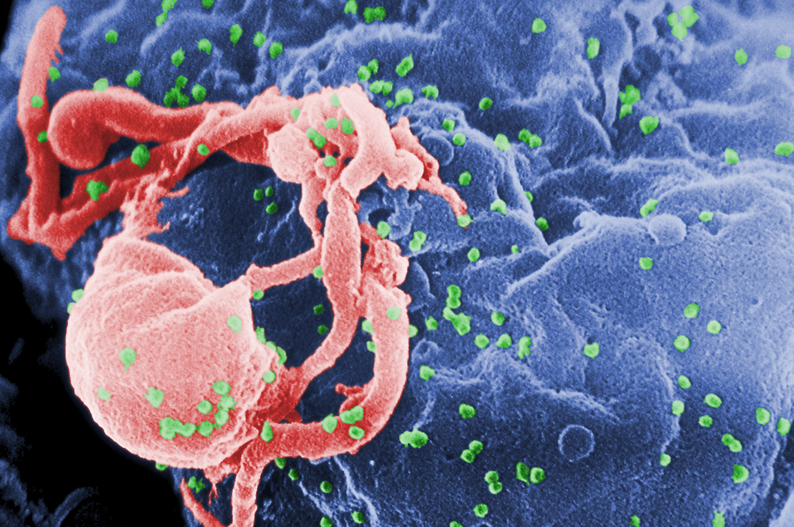

The human immunodeficiency virus (HIV) is a lentivirus (a subgroup of retrovirus) that causes HIV infection and over time acquired immunodeficiency syndrome (AIDS).AIDS is a condition in humans in which progressive failure of the immune system allows life-threatening opportunistic infections and cancers to thrive. Without treatment, average survival time after infection with HIV